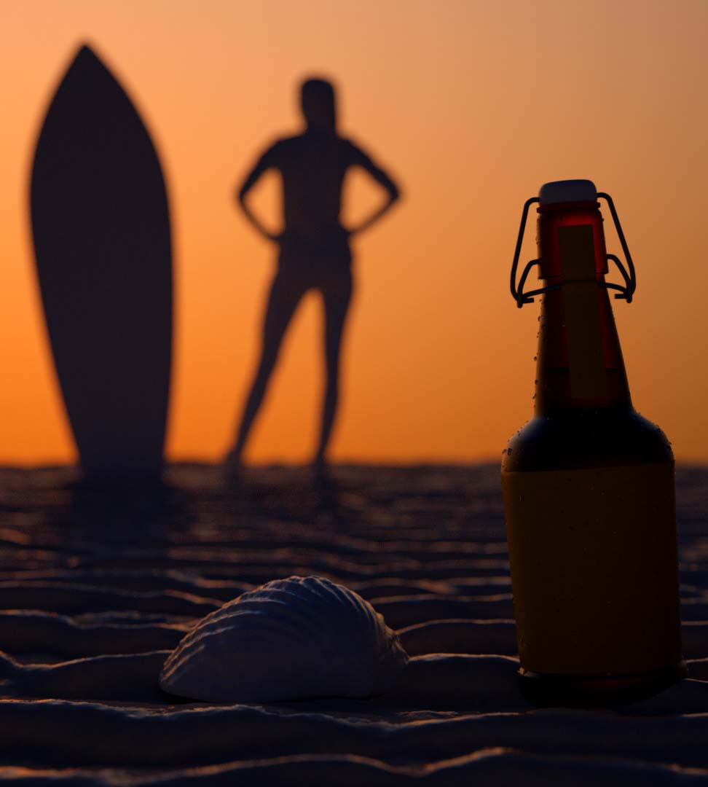

PREGUTAS FRECUENTES
¿Cómo es la primera compra?
Elegís variedades de cerveza, y luego te preguntaremos si devolvés o no envases botellón.
¿Cómo me llega la cerveza?
Nuestros vehículos van hasta tu casa, te dan los botellones llenos y retiran los envases vacíos.
¿Si no tengo botellón vacío puedo pedir?
Sí. Sino tenés botellones también vendemos nuevos ($115 c/u).
¿Cualquier botellón sirve?
Cualquier botellón de 1,9 Litros, ya sea color caramelo o transparente. Siempre que tenga su correspondiente tapa.
¿Puedo retirar la cerveza?
Barrock envía los pedidos directamente de las fábricas a tu puerta, por lo que no es posible retirarlas.
¿Cómo calculo el precio?
Si tenés, es $149 por botellón que recargás. Sino tenés botellón sumá $115 por botellón que pidas.
